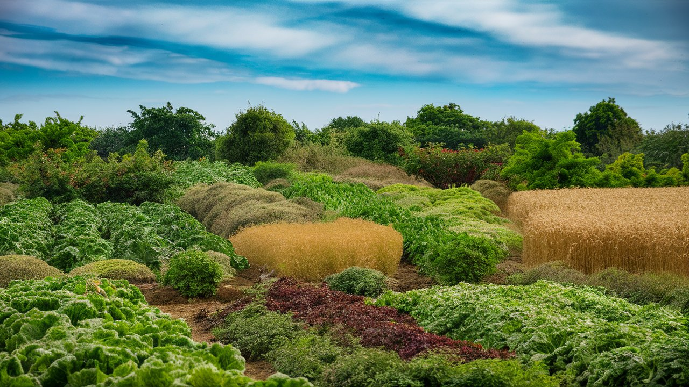

Sustainable Agriculture
Managing Land Conservation Against Food Production
As the world population keeps growing, the challenge of generating enough food while preserving the ecosystems of our planet becomes more critical. Sustainable agriculture offers a solution by balancing needs of food production with environmental preservation. This blog post looks at sustainable agriculture, its practices, and how it might help to balance land preservation with food security.
Sustainable agriculture is a means of food production whereby current food needs of society are satisfied without compromising the capacity of next generations to satisfy their own. It merged three main objectives.
- In health, environmentalism
- In economics, profitability
- Societal and financial equality
Benefits of sustainable farming include
- Conservation:
- Preserving biodiversity
- Reduces need to convert wild areas into farms
- Health: Increased carbon sequestration and changed soil structure and fertility.
- Conservation: Lowering water pollution from runoff and improving water use efficiency.
- Change Reducing:
- Increases climate impact resilience
- Reduces greenhouse gas emissions
- Stability: Reduces dependence on outside resources; distributes farmer income sources.
Some of the future trends in sustainable agriculture include vertical farming to minimize the use of land through produce in controlled environments. Organic agriculture seeks to rebuild organic matter in the soils and restore biodiversity that has been degraded. Gene editing is used to devise crop variants that are more resilient to stress from climatic change and pests. Digital agriculture uses artificial intelligence, AI, and big data to have the right decisions made within farming management.
Challenges and answers to sustainable agriculture lie in the closure of the skills and information gap through support of education and farmer extension projects, defraying initial costs with financial incentives and support during the transition period, creating markets for environment-friendly food products, raising consumer awareness, and developing policies and regulations that support sustainable farming. Furthermore, if the engagements in sustainable farming practices are to keep improving, there should be increased funding allocation for research and innovation.
Sustainable agriculture essentially offers a way to balance the urgent needs of food production with land preservation. While still generating enough food for a growing population, using strategies that work with rather than against nature will help to preserve ecosystems, boost biodiversity, and slow down climate change. Though farmers, consumers, legislators, and researchers must all strive toward sustainable agriculture, the benefits to our food security and planetary health make this essential endeavor indispensable.
Support sustainable agriculture by choosing sustainably grown foods, advocating good laws, and—should you be a farmer or gardener—by considering applying sustainable practices in your own food producing operations.